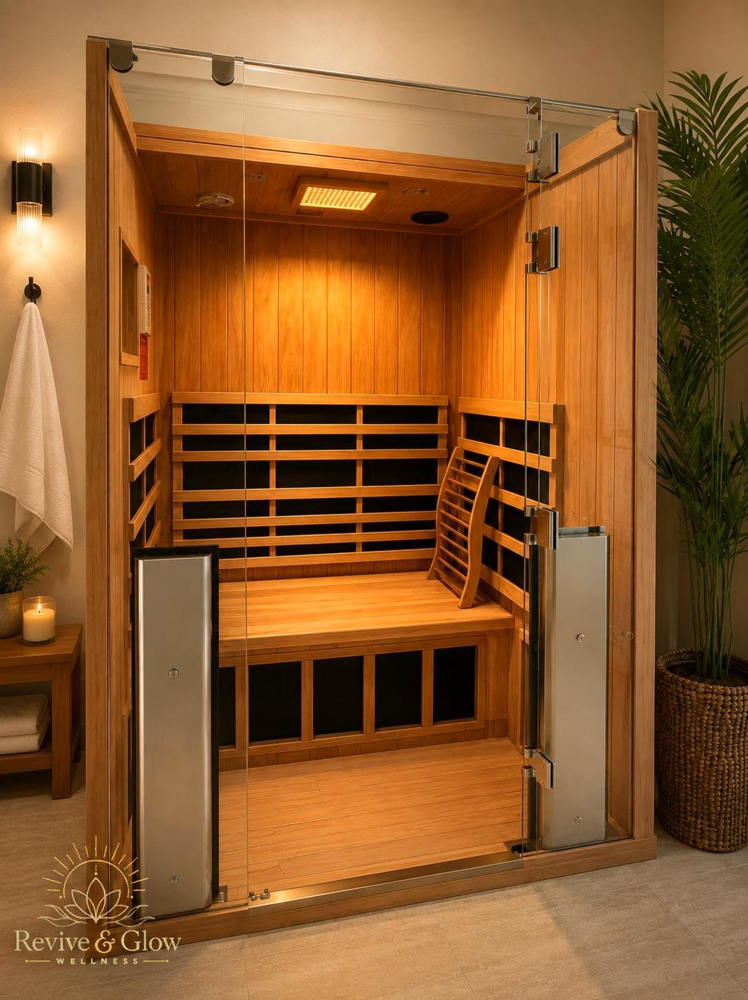
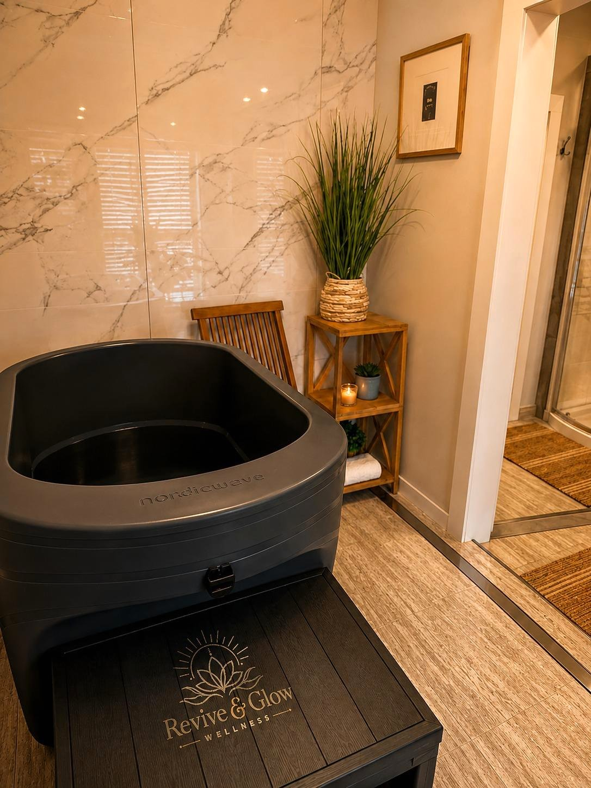

Infrared Sauna
Gentle, enveloping heat in an enclosed room, with space to slow down. Our sauna sessions are 20–40 minutes; first visits can be shorter for comfort.
Tell us whether you are new to sauna when planning your visit.
Infrared Sauna + Cold Plunge
Warmth meets a refreshing reset at Revive & Glow Wellness. Explore infrared sauna and cold plunge in one visit, in our enclosed sauna and cold plunge room.
Located at 9899 66th St N, our boutique studio offers individual wellness experiences with guidance from our team.
Ask About Contrast Therapy on WhatsAppSauna and cold plunge are separate therapies. Contact us to confirm pairing options, pricing, and availability.

Two distinct experiences
Contrast therapy combines warm and cold experiences. At Revive & Glow, that means infrared sauna and cold plunge. The warmth of the sauna and the cool immersion offer different sensations, brought together in a visit planned with our team.
Gentle, enveloping heat in an enclosed room, with space to slow down. Our sauna sessions are 20–40 minutes; first visits can be shorter for comfort.
Tell us whether you are new to sauna when planning your visit.

A brief cold-water experience with guidance from our team. The listed exposure time is 2–5 minutes, and shorter exposure is always acceptable. First sessions are supervised.
These are the individual therapy durations, not a set contrast therapy schedule. Ask us to confirm the total time for your visit.
Start by contacting our team about combining sauna and cold plunge. We will confirm availability and pricing, explain what to expect, and help you plan your visit.
The sauna and cold plunge share an enclosed room reserved for you or an accompanying person you choose. Your therapy is never shared with strangers. Other guests may be using different areas of the studio.
Free parking, towels, water, and a bathroom are available. A quick shower is available with sauna use.
No. One Revive Session covers one included therapy. Sauna and cold plunge are separate therapies. Contact us about combining them and the applicable pricing before you visit.
Yes. Both are available as individual therapies. Explore our visit options, or contact the studio for help choosing your first experience.
Message us on WhatsApp using the button above or call (727) 776-4569. Our team will confirm availability and how to arrange both therapies.
Visit us at 9899 66th St N, Pinellas Park, FL 33782. Walk-ins are welcome daily, 10 AM–4 PM, subject to availability. Appointments are available Monday–Saturday, 8 AM–8 PM, and Sunday, 10 AM–4 PM. Please contact us before coming for a combined visit.
Walk-ins: daily, 10 AM–4 PM, subject to availability.
Appointments: Monday–Saturday, 8 AM–8 PM; Sunday, 10 AM–4 PM.